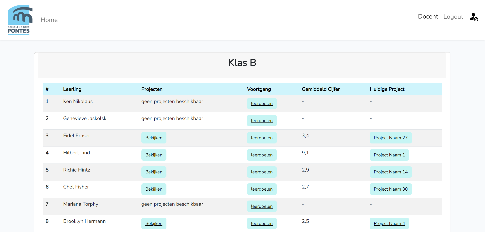

Een project dat ik heb gedaan in mijn eerste jaar van de opleiding HBO-ICT voor Scholengroep de Pontes
De klant (een docent) waarvoor dit project is gemaakt liep tegen het probleem aan dat hij alle administratie voor het middelbare schoolvak informatica allemaal handmatig doet. Dit kostte veel werk voor hem. De klant vroeg daarom aan mij en mijn groepje om een website te ontwikkelen waar hij makkelijk leerlingen kan toevoegen, cijfers voor bepaalde projecten kan invoeren, projecten kan aanmaken voor leerlingen, leerdoelen kan bijhouden etc. Ook wilde hij dat de leerlingen zelf ook op de website konden bijhouden hoe ver ze bijvoorbeeld zijn voor een bepaald project en welk cijfer zij hebben gehaald.
Er is dus een website ontwikkeld waarin er kan worden ingelogd met een docent of een leerling account waarna je per account dus verschillende functionaliteiten verkrijgt. Een docent kan namelijk cijfers invoeren, projecten aanmaken, en leerdoelen maken en bijhouden terwijl een leerling kan inloggen om dus te bekijken hoe hij of zij er voor staat, welk project hij of zij aan het doen is etc. Er is dus gebruik gemaakt van databases om de verschillende accounts bij te houden en er is gebruikt gemaakt van Microsoft SSO om in te kunnen loggen. Verder is de applicatie gemaakt met behulp van PHP en SQL databases.
Dit project was voor mij de eerste keer om "from scratch" een website te ontwikkelen in een programmeertaal waar ik nog niet bekwaam in was. Ook is er veel research gedaan naar het inloggen met behulp van Microsoft SSO dit was namelijk nog een hele klus, gelukkis is het uiteindelijk gelukt en hier heb ik veel van geleerd. Verder was dit voor mij ook de eerste keer dat ik te werk ging met verschillende SCRUM methodieken zoals daily stand-ups & stand-downs, retro's, demo's en rollen zoals team coach, tracker en user customer. Binnen het project team werden deze rollen per sprint verdeeld onder de teamleden dus ik ben elke rol een keer geweest om hier dus van te leren. Ik merkte dat ik het beste was in de rol tracker omdat ik erg punctieel ben